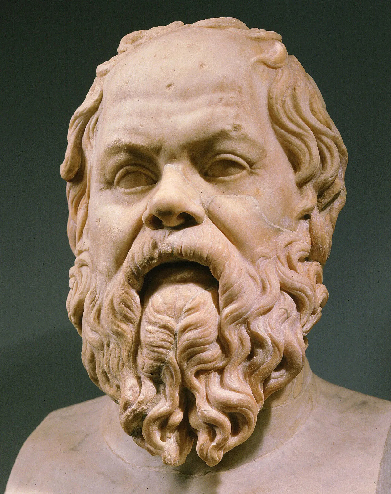

Wymieńcie postacie ze świata sztuki, kultury i literatury, które zbliżyły się do wartości wyznawanych przez Sokratesa. Wybierzcie jedną postać i uzasadnijcie swój wybór.
Postacie:
Platon (427-347 p.n.e.)
Epiktet (50-135 n.e.)
Bolesław Prus (1847-1912, Polska)
Heraklit z Efezu (ok. 535-475 p.n.e., Grecja)
Marek Aureliusz (121-180 n.e., Rzym)
Wybrana postać:
Wybraliśmy postać Platona jako jednego ze spadkobierców myśli Sokratesa, ponieważ był on nie tylko uczniem, ale także znakomitym filozofem, który rozwijał i kontynuował idee swojego mistrza. Jego dialogi, takie jak "Państwo" czy "Fedon", stanowią integralną część dziedzictwa sokratejskiego, ukazując głęboką refleksję nad teorią form, etyką i naturą poznania. Platon był blisko związany z filozofią Sokratesa, przyczyniając się do rozwinięcia i upowszechnienia sokratejskich koncepcji, co sprawia, że jest on jednym z najbardziej reprezentatywnych spadkobierców tego filozoficznego dziedzictwa.